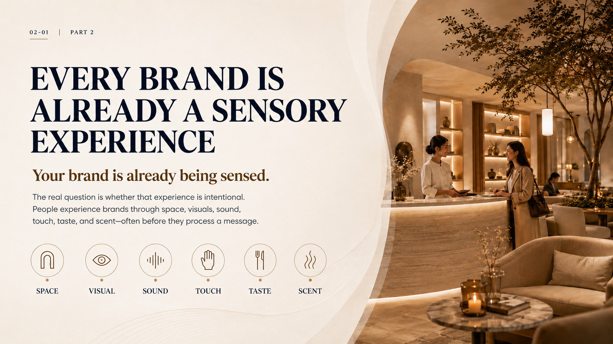
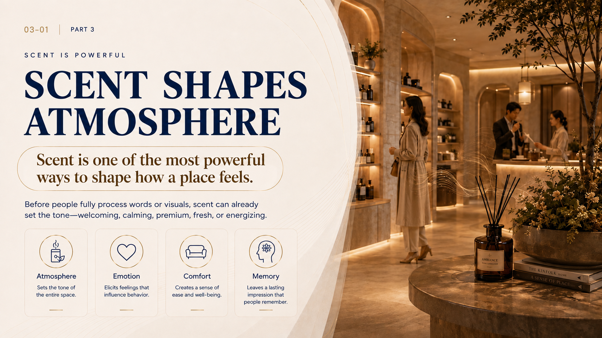
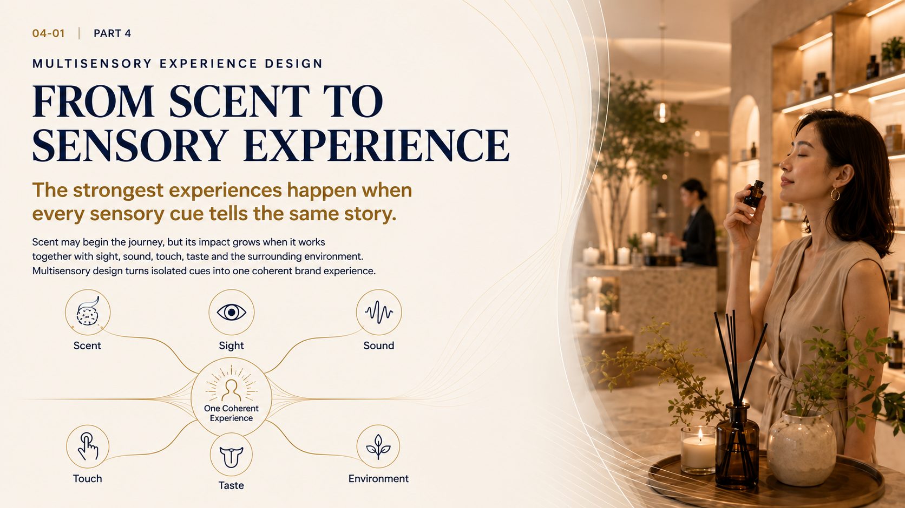
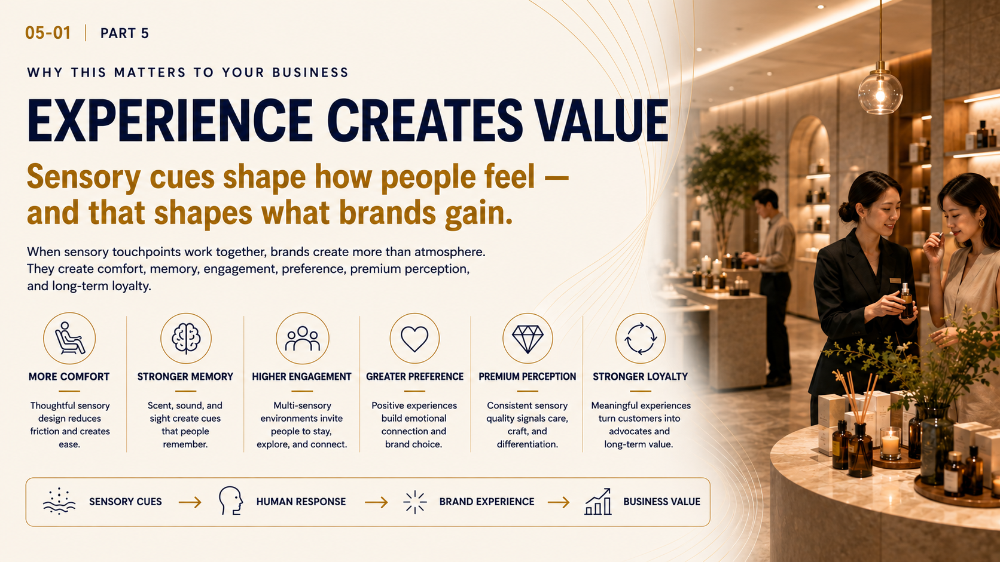
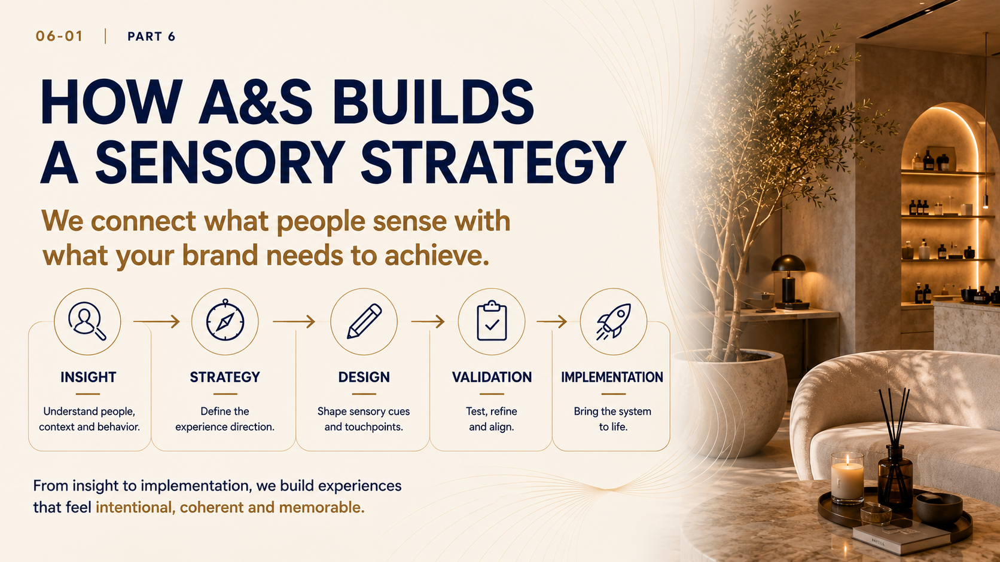
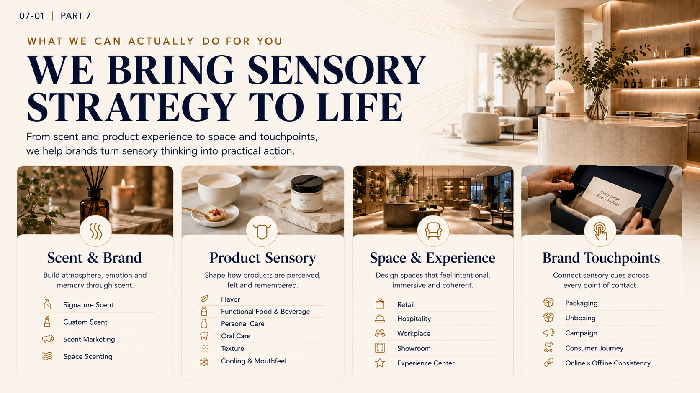

Atmosphere
Sets the tone of the entire space.
Sensory strategies
The beginning of every experience
People may forget what a brand says.
But they remember how it made them feel.

Every brand is being sensed
Your brand is already being sensed.
The real question is whether that experience is intentional. People experience brands through space, visuals, sound, touch, taste, and scent, often before they process a message.
MOREScent is powerful
Scent is one of the most powerful ways to shape how a place feels.
Before people fully process words or visuals, scent can already set the tone: welcoming, calming, premium, fresh, or energizing.
MORE
Sets the tone of the entire space.
Elicits feelings that influence behavior.
Creates a sense of ease and well-being.
Leaves a lasting impression that people remember.

Multisensory experience design
The strongest experiences happen when every sensory cue tells the same story.
Scent may begin the journey, but its impact grows when it works together with sight, sound, touch, taste and the surrounding environment. Multisensory design turns isolated cues into one coherent brand experience.
MOREWhy this matters to your business
Sensory cues shape how people feel, and that shapes what brands gain.
When sensory touchpoints work together, brands create more than atmosphere. They create comfort, memory, engagement, preference, premium perception, and long-term loyalty.
MORE
Thoughtful sensory design reduces friction and creates ease.
Scent, sound, and sight create cues that people remember.
Multisensory environments invite people to stay, explore and connect.
Positive experiences build emotional connection and brand choice.
Consistent sensory quality signals care, craft, and differentiation.
Meaningful experiences turn customers into advocates and long-term value.

Our approach
We connect what people sense with what your brand needs to achieve.
MOREUnderstand people, context and behavior.
Define the experience direction.
Shape sensory cues and touchpoints.
Test, refine and align.
Bring the system to life.
We build experiences that feel intentional, coherent and memorable.
What we can actually do for you
From scent and product experience to space and touchpoints, we help brands turn sensory thinking into practical action.
MORE
Build atmosphere, emotion and memory through scent.
Shape how products are perceived, felt and remembered.
Design spaces that feel intentional, immersive and coherent.
Connect sensory cues across every point of contact.